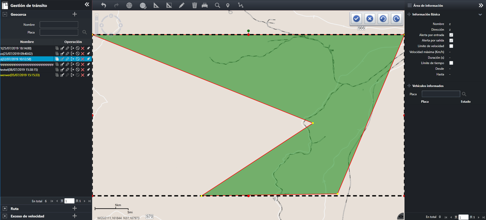

Editar la forma de valla electrónica
La forma de valla electrónica que se ha agregado se puede modificar.
| 1. | Seleccione una valla electrónica en la lista de información en la interfaz principal de la cerca electrónica, haga clic en
el lado derecho 〖 
Fig 56 Editar la forma de valla electrónica Los nodos en la valla son puntos que son operables al editar la forma, donde el nodo amarillo es el punto de deformación,
el nodo rojo es el punto de control y el nodo verde en el medio de la parte superior del marco externo es el punto de rotación.
|
| 2. | Haga clic en el nodo amarillo y arrastre para cambiar la forma de la valla electrónica. Al mismo tiempo, haga doble clic en
el nodo amarillo para eliminarlo; haga clic en el punto de control rojo y arrastre para expandir la valla electrónica; haga
clic en el punto de rotación verde y arrastre para rotar la valla electrónica.
Si la valla tiene más de 34 nodos amarillos, puede hacer doble clic en el nodo amarillo para eliminar los puntos adicionales.
|
| 3. | Una vez completada la edición, haga clic 〖 |
| 4. | (Opcional) Haga clic 〖 Durante el proceso de edición del valla electrónico, haga clic 〖〗 para cancelar la operación de edición; haga clic para rehacer una operación de edición.
|